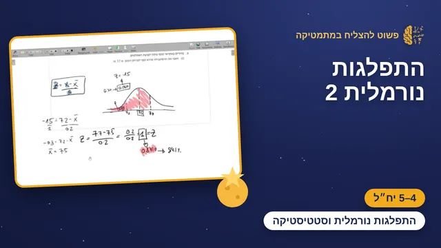
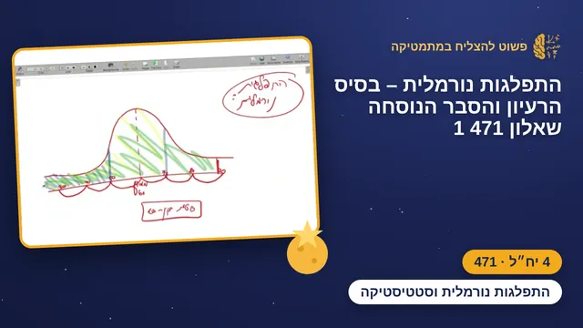
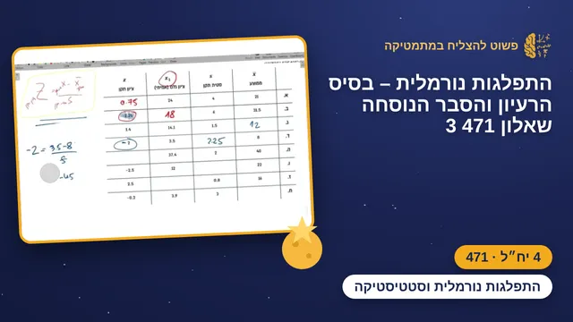

פשוט להצליח במתמטיקה › כל הנושאים › התפלגות נורמלית וסטטיסטיקה
התפלגות נורמלית וסטטיסטיקה – סרטוני הסבר ותרגול
28 סרטוני הסבר ותרגול בנושא התפלגות נורמלית וסטטיסטיקה – לכיתה ט׳, שאלון 371, שאלון 471, שאלון 571. כל נושא מוסבר מהקל אל הקשה: קודם הרעיון, אחר כך תרגילים, ובסוף שאלות בסגנון בגרות. הכול בחינם, בשיטת "פשוט להצליח".
רוצים לעקוב אחרי ההתקדמות?נרשמים בחינם, וכל סרטון שראיתם מסומן ✓. ממשיכים מכל מכשיר.
הצטרפות בחינם ←התפלגות נורמלית וסטטיסטיקה – כיתה ט׳ כל הנושאים של כיתה ט׳ ←
התפלגות נורמלית וסטטיסטיקה – שאלון 371 כל הנושאים של שאלון 371 ←
ממוצע משוקלל – שאלת שכר חודשיסטטיסטיקה – טבלת שכר, קבוצות והיסטוגרמה היסטוגרמה – ממוצע, סטיית תקן ושינוי בנתונים
היסטוגרמה – ממוצע, סטיית תקן ושינוי בנתונים
היסטוגרמה – ממוצע, סטיית תקן ושינוי בנתוניםהתפלגות נורמלית וסטטיסטיקה – שאלון 471 כל הנושאים של שאלון 471 ←
 רגרסיה לינארית שאלון 471 – מתכונת
רגרסיה לינארית שאלון 471 – מתכונת התפלגות נורמלית שאלון 471 – מתכונת
התפלגות נורמלית שאלון 471 – מתכונת התפלגות נורמלית – אורך גבעולי פרחים, אחוזים ופרמטריםהתפלגות נורמלית – אורך חיי טלפונים סלולריים
התפלגות נורמלית – אורך גבעולי פרחים, אחוזים ופרמטריםהתפלגות נורמלית – אורך חיי טלפונים סלולריים מתאם וקו רגרסיה – חישוב r ומשוואת הישר
מתאם וקו רגרסיה – חישוב r ומשוואת הישר התפלגות נורמלית – משקלי תינוקות
התפלגות נורמלית – משקלי תינוקות התפלגות נורמלית – זמן חנייה בחניוןהתפלגות נורמלית – זמן הגעה לעבודה, מציאת סטיית תקן
התפלגות נורמלית – זמן חנייה בחניוןהתפלגות נורמלית – זמן הגעה לעבודה, מציאת סטיית תקן התפלגות נורמלית – אורך פרחים במשתלה
התפלגות נורמלית – אורך פרחים במשתלה התפלגות נורמלית – ציוני בגרות ופסיכומטרי השוואת גרפיםהיסטוגרמה – ממוצע, סטיית תקן ושינוי בנתוניםהתפלגות 471 מדהים ומרגש
התפלגות נורמלית – ציוני בגרות ופסיכומטרי השוואת גרפיםהיסטוגרמה – ממוצע, סטיית תקן ושינוי בנתוניםהתפלגות 471 מדהים ומרגש רגרסיה 471
רגרסיה 471 התפלגות נורמלית – הסבר של כל החומר בשתי דקות וחצי
התפלגות נורמלית – הסבר של כל החומר בשתי דקות וחצי התפלגות נורמלית שאלות בגרות 4 יח שאלון 471 2
התפלגות נורמלית שאלות בגרות 4 יח שאלון 471 2 התפלגות נורמלית – מתכונת שאלון 471
התפלגות נורמלית – מתכונת שאלון 471 רגרסיה לינארית – מתכונת שאלון 471
רגרסיה לינארית – מתכונת שאלון 471 התפלגות נורמלית 3התפלגות נורמלית
התפלגות נורמלית 3התפלגות נורמלית
התפלגות נורמלית 2 התפלגות נורמלית 4
התפלגות נורמלית 4
התפלגות נורמלית – בסיס הרעיון והסבר הנוסחה שאלון 471 1 התפלגות נורמלית – בסיס הרעיון והסבר הנוסחה שאלון 471 4
התפלגות נורמלית – בסיס הרעיון והסבר הנוסחה שאלון 471 4 התפלגות נורמלית – בסיס הרעיון והסבר הנוסחה שאלון 471 2
התפלגות נורמלית – בסיס הרעיון והסבר הנוסחה שאלון 471 2
התפלגות נורמלית – בסיס הרעיון והסבר הנוסחה שאלון 471 3 התפלגות נורמלית – בסיס הרעיון והסבר הנוסחה שאלון 471 5
התפלגות נורמלית – בסיס הרעיון והסבר הנוסחה שאלון 471 5התפלגות נורמלית וסטטיסטיקה – שאלון 571 כל הנושאים של שאלון 571 ←
התפלגות נורמלית – אורך גבעולי פרחים, אחוזים ופרמטריםהתפלגות נורמלית – הסבר של כל החומר בשתי דקות וחציהתפלגות נורמלית 3התפלגות נורמליתהתפלגות נורמלית 2התפלגות נורמלית 4